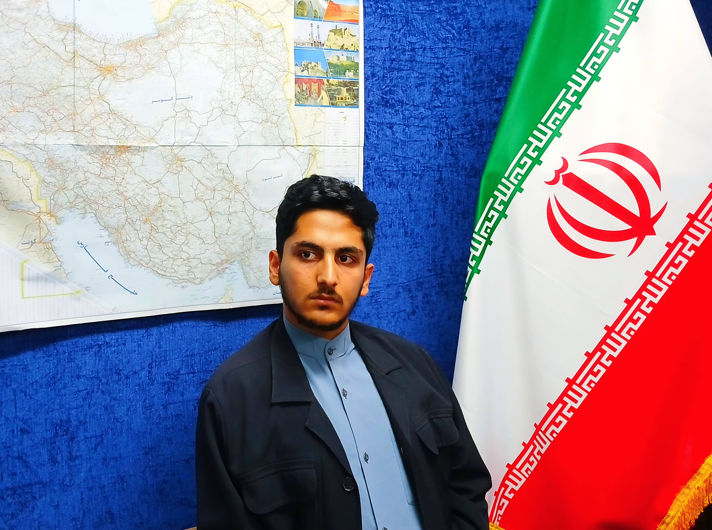

خبرگزاری حوزه
نخستین کانون تخصصی جرمشناسی در مرکز استان کهگیلویه و بویراحمد راهاندازی میشود
سید مهدی رضا موسوی از برنامهریزیهای تخصصی قرارگاه صالحون برای راهاندازی یک کانون علمی و پژوهشی در عرصه جرمشناسی خبر داد. این مرکز با هدف پیوند دانش دانشگاهی و امنیت پایدار و بهرهگیری از ظرفیت نخبگان حقوقی، وکلا و کادر قضایی فعالیت خواهد کرد.